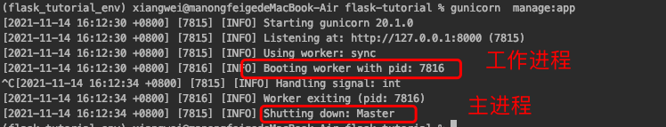
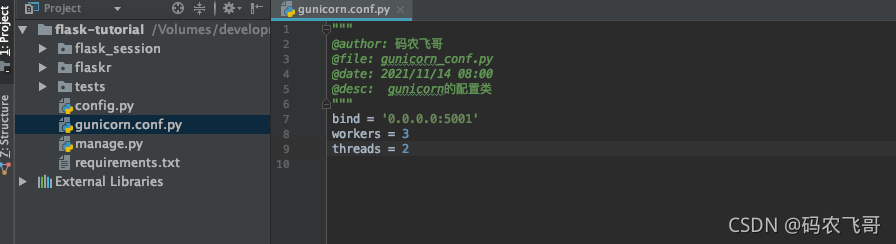
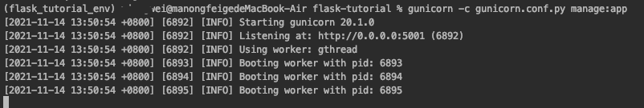
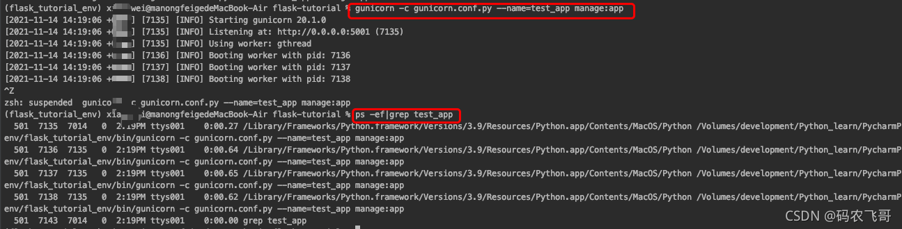
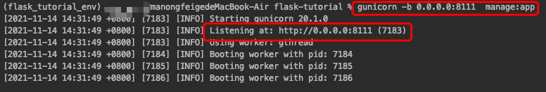
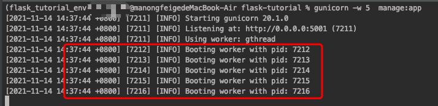
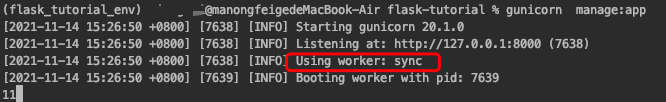

Gunicorn的使用手册
目录
目录Gunicorn是什么Gunicorn的安装安装查看Gunicorn的版本运行GunicornGunicorn的配置参数说明[OPTIONS]1.1 配置文件config1.2 Debugging1.3 Logging1.4 指定进程名称1.5 客户端地址（server socket）1.6 工作进程数（Worker Processes）1.7 工作模式（worker_class）1.8线程数(threads)1.9 工作线程连接数（worker_connections）1.10 最大请求数（max_requests）1.11 超时设置（timeout）1.12 连接的存活时间（keepalive）工作模式的补充说明使用gevent模式会出现一些兼容性问题。性能实践总结粉丝专属福利参考
Gunicorn是什么
Gunicorn 是一个 Python 的 WSGI HTTP 服务器。它所在的位置通常是在反向代理（如 Nginx）或者 负载均衡（如 AWS ELB）和一个 web 应用（比如 Django 或者 Flask）之间。它是一个移植自Ruby的Unicorn项目的pre-fork worker模型，即支持eventlet也支持greenlet。
如果对Flask框架还有不清楚的地方，可以查看本文一分钟学会Flask框架的安装与快速使用
Gunicorn启动项目之后一定会有一个主进程Master和一个或者多个工作进程。工作进程的数量可以指定。工作进程是实际处理请求的进程。主进程是维护服务器的运行。

Gunicorn的安装
安装
1 | # 安装最新版本的gunicorn |
查看Gunicorn的版本
1 | pip show gunicorn |
运行Gunicorn
1 | gunicorn [OPTIONS] $(MODULE_NAME):$(VARIABLE_NAME) |
$(MODULE_NAME):$(VARIABLE_NAME) 表示要启动的WSGI_app。
其中MODULE_NAME对应的是python文件名，VARIABLE_NAME对应web应用实例。
举个🌰吧！！！这里定义一个名为manage.py 文件，在其内部创建Flask应用。
1 | #manage.py |
那么，用gunicorn启动该Flask应用的命令就是：
1 | gunicorn --workers=2 manage:app |
其中workers用于指定工作进程数。
当然也可以通过直接调用create_app方法
1 | #manage.py |
那么，用gunicorn命令直接调用create_app方法就是：
1 | gunicorn --workers=2 manage:create_app() |
Gunicorn的配置参数说明[OPTIONS]
在实际开发中一般情况下都会用一个单独的python配置文件来配置gunicorn的启动参数。gunicorn的参数有很多，这里就重点介绍一下在实际开发中经常需要用到的一些配置。
1.1 配置文件config
命令是：-c CONFIG 或--config=CONFIG
这个命令是指定Gunicorn的配置文件，配置文件的作用就是将我们需要的配置写到该配置文件中。
默认的配置文件的名称是 ./gunicorn.conf.py，一般是将该配置文件放在项目的根目录下。就像下面这样

这里设置gunicorn绑定的IP地址和端口号，worker数量以及线程数。
启动该项目的命令是: gunicorn -c gunicorn.conf.py manage:app。

1.2 Debugging
命令 --reload=True,或者在gunicorn.conf.py 文件中加上reload=True 配置。
这样的话，当代码变动时gunicorn就可以重启了。
1.3 Logging
Logging的日志有两种，一种时业务日志info，一种是错误日志error。后面再补充。
1.4 指定进程名称
命令 -n proc_name 或者--name=APP_NAME 用于指定gunicorn进程的名称
默认情况下通过 gunicorn 启动项目之后，进程的名称是gunicorn。需要注意的是这个进程的名称不同于应用的名称。
如下:gunicorn -c gunicorn.conf.py --name=test_app manage:app 指定进程的名称是 test_app。

1.5 客户端地址（server socket）
命令行 -b ADDRESS 或者--bind ADDRESS
默认的IP和端口号是 127.0.0.1:8000
bind 配置主要用于指定应用绑定的IP和端口号。
格式是HOST,HOST:PORT,unix:PATH或者fd://FD, 需要注意的是IP地址必须是一个合法的IP地址
例如：gunicorn -b 0.0.0.0:8111 manage:app。指定端口号为8111。

1.6 工作进程数（Worker Processes）
**命令行-w INT 或者--workers INT**。
默认的进程数是1。
这个配置用于指定处理请求的工作进程的数量，单核机器上这个数量一般在2-4个之间。你需要找到最适合该服务器的进程数。
例如：gunicorn -w 5 manage:app, 表示启动5个工作进程。每个工作进程都可以多线程执行任务。

1.7 工作模式（worker_class）
命令行-k STRING或者--worker-class STRING
默认的工作模式是sync，即同步的工作模式。
一共有五种工作模式，分别是 sync, eventlet, gevent, tornado, gthread 。
下面就分别介绍下这些工作模式。
- sync 模式(同步工作模式)
这是最基本的工作模式，也是默认的工作模式，线程为native类型。即请求先来后到，排队模式。 - eventlet 模式（协程异步）
eventlet 工作模式是基于eventlet库，利用python协程实现的。
要使用该工作模式的话必须先安装eventlet库，并且版本要大于等于0.24.1
安装命令是：pip install eventlet - gevent模式（协程异步）
gevent是基于Greentlet库，利用python协程实现的。
安装命令是:pip install gevent
Gunicorn允许通过设置对应的worker类来使用这些异步Python库。这里的设置适用于我们想要在单核机器上运行的gevent：
1 | gunicorn --worker-class=gevent -w 2 manage:app |
1 | gunicorn --workers=5 --threads=2 main:app |
该命令等同于：
1 | gunicorn --workers=5 --threads=2 --worker-class=gthread main:app |
该例中里面的最大并发请求数是 worker*线程，也就是10。指定threads参数的话则工作模式自动变成gthread模式。
1.8线程数(threads)
命令行--threads INT
默认每个worker一个线程执行。
表示每个工作进程处理请求的线程数。指定threads参数的话则工作模式自动变成gthread模式。
1.9 工作线程连接数（worker_connections）
命令行：--worker-connections INT
默认值是： 1000
该参数的含义是：每个工作线程同时存在的连接数，该参数仅在Eventlet和Gevent 两种工作模式下有效。
1 | gunicorn --worker-class=gevent --worker-connections=1000 --workers=3 main:app |
worker-connections 是对于 gevent worker 类的特殊设置。(2CPU)+1 仍然是建议的workers 数量。因为我们仅有一核，我们将会使用 3 个worker。在这种情况下，最大的并发请求数量是3000。（3个worker1000个连接/worker）
1.10 最大请求数（max_requests）
命令行--max-requests INT
默认值是0
该参数的含义是：在重启之前工作进程（worker）能处理的最大请求数，任何一个大于0的值都会限制工作进程（worker）在重启之前处理的请求数量，这是一种帮助限制内存泄漏的简单方法。
如果该值设置为0（默认值）那么工作进程的自动重启是被禁用
1.11 超时设置（timeout）
命令行-t INT 或者--timeout INT
默认值是30秒。
工作进程在超过设置的超时时间内没有响应将会被杀死并重启。
当值为0就表示禁用超时设置。
通常，默认的30秒就够了，只有当确定对同步工作进程有影响时才会修改该值。对于非同步工作进程，这意味着工作进程仍在运行，不受处理单个请求所需的时间的限制。
1.12 连接的存活时间（keepalive）
命令行--keep-alive INT
默认值是2
连接超时时间，通常设置在1-5秒范围内。
工作模式的补充说明
当worker指定为gevent或者evenlet类型时，线程变成基于Greentlet的task(伪线程)，这时候线程数量threads参数是无效的。
使用gevent模式会出现一些兼容性问题。
使用gevent时，系统会使用monkey patch。系统的部分函数会被修改，
有些库会兼容gevent的类型，
例如，任务调度的库apscheduler，web socket需要socketio的库等，需要专门选择gevent的函数。
而有些库则直接无法使用，例如多进程multiprocess。
例如，在一个api请求中，如果需要使用多核cpu资源，采用multiprocess进行多进程计算。则会出现卡死的问题。gevent中，不能使用multiprocess库。
性能实践
- 如果这个应用是I/O受限，通常可以通过使用“伪线程”（gevent或asyncio）的工作模式来得到最佳性能。正如我们了解到的，Gunicorn通过设置合适的worker类并将workers数量调整到
（2*CPU）+1来支持这种编程范式。 - 如果这个应用是CPU受限，那么应用程序处理多少并发请求就并不重要，唯一重要的是并行请求的数量。因为Python’s GIL，线程和’伪线程’并不能以并行模式执行，可以将worker的数量改成CPU的核数，理解到最大的并行请求数量其实就是核心数。这时候适合的工作模式是sync工作模式。
- 如果不确定应用程序的内存占用，使用多线程以及相应的gthread worker类会产生更好的性能，因为应用程序会在每个worker上都加载一次，并且在同一个worker上运行的每个线程都会共享一些内存，但这需要一些额外的CPU消耗。
- 如果你不知道你自己应该选择什么就从最简单的配置开始，就只是 workers 数量设置为 (2*CPU)+1 并且不用考虑 多线程。从这个点开始，就是所有测试和错误的基准环境。如果瓶颈在内存上，就开始引入多线程。如果瓶颈在 I/O 上，就考虑使用不同的 Python 编程范式。如果瓶颈在 CPU 上，就考虑添加更多内核并且调整 workers 数量。
总结
本文详细介绍了Gunicorn的安装使用以及各个配置参数的含义。希望对读者朋友们有所帮助。针对这些的学习还是看官方文档最好。